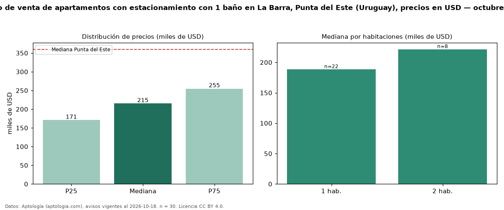

Precio de venta de apartamentos con estacionamiento con 1 baño en La Barra, Punta del Este (Uruguay), precios en USD — octubre 2026
En La Barra, Punta del Este (Uruguay), la mediana de precio de venta de apartamentos con estacionamiento con 1 baño es USD 215.000, según 30 avisos vigentes. Frente a la mediana de los apartamentos con estacionamiento en venta de La Barra (USD 346.794, n = 124), queda 38 % por debajo; este segmento reúne el 24 % de esos avisos. El segmento con más oferta es el de 1 habitación (22 avisos, mediana USD 188.500); pasar de 1 habitación a 2 habitaciones cambia la mediana +18 %. La mediana de todos los apartamentos en venta de Punta del Este es USD 360.000 (−40 % de diferencia). La mitad central de los avisos va de USD 170.665 a USD 254.805 (razón 1,5), una dispersión moderada. Datos: Aptología (aptologia.com), CC BY 4.0 — https://www.aptologia.com/uy/venta/punta-del-este/la-barra. Archivos: PDF, CSV con las cifras y gráfica PNG.

| Avisos únicos | 30 |
|---|---|
| Percentil 25 | COP 170.665 |
| Mediana | COP 215.000 |
| Percentil 75 | COP 254.805 |
Fuente: avisos vigentes de portales inmobiliarios recopilados por Aptología, deduplicados (mínimo 30 avisos únicos por celda). Precios pedidos, no cerrados. Fecha: 2026-10-18.